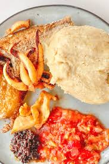
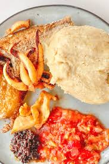

Our Country
Ghana: A Nation of Rich History and Vibrant Culture
Ghana, a country located in West Africa, has a rich and diverse history that spans thousands of years. From ancient kingdoms to colonial rule, Ghana has evolved into a vibrant nation with a unique cultural identity.
Tourism (Food Aspect)
A brief origin/ Historical background
Tuo Zaafi (TZ), also known as "stirring hot" in the Hausa language, is a staple dish originating from the northern regions of Ghana. Its history is deeply intertwined with the agricultural practices and culinary traditions of communities in this part of the country. Traditionally, Tuo Zaafi is made from millet or sorghum flour, which are staple grains in the drier northern climate. Maize flour is also a common variation, particularly in the southern parts of Ghana where the dish has gained popularity. The flour is cooked in water, stirred vigorously to a smooth, thick porridge-like consistency. Unlike some other Ghanaian staples like fufu, Tuo Zaafi was historically more localized to the north and wasn't as commonly found in restaurants across the country until more recently. It has a distinct, slightly softer and less sticky texture compared to fufu or banku. Tuo Zaafi is almost always served with a soup, and the most traditional accompaniment is Ayoyo soup, made from jute leaves. Other vegetable-based soups like okra soup are also common. The soups often feature ingredients like dawadawa (locust beans), smoked fish or meat, and various local spices, contributing to the dish's unique and savory flavor profile. Over time, Tuo Zaafi has gained popularity throughout Ghana, appreciated for its nutritional value and distinct taste. While still strongly associated with Northern Ghanaian cuisine, it can now be found in eateries across the country, representing the rich culinary diversity of Ghana


A brief origin/ Historical background
Fufu is a staple food in Ghana and many other West African countries, with its origins deeply rooted in pre-colonial times. The word "fufu" itself comes from the Twi language of the Akan people in Ghana, meaning "mash" or "mix," which aptly describes its preparation. Historically, fufu was primarily made by pounding boiled yams in a mortar with a pestle until a smooth, elastic dough was formed. This labor-intensive process was often a communal activity. Over time, with the introduction of new crops by Portuguese traders in the 16th century, cassava and plantains became common ingredients, either used alone or in combination with yams, offering variations in texture and flavor. Fufu's significance extends beyond just being a meal. It is a cultural emblem, deeply embedded in the traditions of many Ghanaian societies. Serving fufu to guests is a sign of hospitality and respect. The communal act of sharing fufu from a common bowl fosters unity and strengthens social bonds during family gatherings and ceremonies like weddings and funerals. While modern technology has introduced blenders and instant fufu flour for convenience, the traditional method of pounding remains cherished for the unique texture and flavor it imparts, and for its role in preserving cultural heritage. Fufu continues to be a source of pride and identity for Ghanaians, both at home and within the diaspora, where it serves as a connection to their roots


A brief origin/ Historical background
Kenkey is a significant and historical staple food in Ghana, particularly among the Ga and Fante people along the southern coast. Its origins can be traced back centuries, deeply embedded in the agricultural practices and food preservation techniques of these communities. Traditionally, kenkey is made from fermented corn (maize) dough. The process involves soaking and grinding maize kernels, followed by a period of fermentation that gives kenkey its characteristic slightly sour taste and unique texture. Part of the fermented dough is then cooked before being mixed with the remaining raw dough. This mixture is then wrapped tightly in corn husks or plantain leaves and steamed for an extended period until firm. The fermentation process was likely a crucial method of preserving maize in a time before refrigeration, allowing communities to store and consume this important grain over longer periods. The wrapping in leaves not only imparts a subtle flavor but also makes it convenient for carrying and eating. Historically, kenkey was a staple for fishermen and farmers due to its portability and ability to provide sustained energy. It was a common food for long journeys and outdoor work. Today, kenkey remains a beloved and widely consumed dish throughout Ghana. While the basic preparation methods have endured, variations exist depending on the region and community. It is typically served with pepper sauce (shito), fried fish, grilled tilapia, or other protein sources. Kenkey's enduring popularity speaks to its historical significance and its continued role as a fundamental part of Ghanaian cuisine and culture.
 

A brief origin/ Historical background
Banku is a significant staple food in Ghana, with its historical roots primarily among the Ga and Dangme people of the southeastern coastal plains, particularly the Accra Plains. The name "Banku" is believed to originate from the Dangme language, with "ba mi ku" meaning "food in leaves." This likely refers to the traditional method of wrapping the cooked dough in leaves, either for storage, serving, or even during the cooking process in some variations. Historically, Banku developed as a way to utilize and preserve the region's staple crops: corn (maize) and cassava. The process involves fermenting maize dough, often mixed with cassava dough, for a period. This fermentation not only aids in preservation in the pre-refrigeration era but also imparts Banku's characteristic slightly sour flavor. The fermented dough is then cooked by stirring it over heat with added water until it forms a smooth, elastic, and slightly sticky dough. Banku was and continues to be a significant part of the daily diet for many in the coastal regions. Its relatively simple preparation and the availability of its core ingredients contributed to its prominence. It's a versatile dish, traditionally served with various soups and stews, particularly pepper-based ones like pepper soup, groundnut soup, and palm nut soup, often accompanied by grilled fish or other protein sources. While its origins are strongly tied to the Ga and Dangme communities, Banku's popularity has spread throughout Ghana, becoming a widely enjoyed dish across different ethnic groups. It stands as a testament to the ingenuity of Ghanaian culinary traditions in utilizing local resources and developing flavorful and sustaining meals